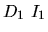
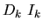
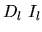

| Dropping Balls |
A number of K balls are dropped one by one from the root of a fully binary tree structure FBT. Each time the ball being dropped first visits a non-terminal node. It then keeps moving down, either follows the path of the left subtree, or follows the path of the right subtree, until it stops at one of the leaf nodes of FBT. To determine a ball's moving direction a flag is set up in every non-terminal node with two values, either false or true. Initially, all of the flags are false. When visiting a non-terminal node if the flag's current value at this node is false, then the ball will first switch this flag's value, i.e., from the false to the true, and then follow the left subtree of this node to keep moving down. Otherwise, it will also switch this flag's value, i.e., from the true to the false, but will follow the right subtree of this node to keep moving down. Furthermore, all nodes of FBT are sequentially numbered, starting at 1 with nodes on depth 1, and then those on depth 2, and so on. Nodes on any depth are numbered from left to right.
For example, Fig. 1 represents a fully binary tree of maximum depth 4 with
the node numbers 1, 2, 3, ..., 15. Since all of the flags are initially set to
be false, the first ball being dropped will switch flag's values at node
1, node 2, and node 4 before it finally stops at position 8. The second ball
being dropped will switch flag's values at node 1, node 3, and node 6, and
stop at position 12. Obviously, the third ball being dropped will switch
flag's values at node 1, node 2, and node 5 before it stops at position 10.
Fig. 1: An example of FBT with the maximum depth 4 and sequential
node numbers.
Now consider a number of test cases where two values will be given for each test. The
first value is D, the maximum depth of FBT, and the second one is I,
the Ith ball being dropped. You may assume the value of I will not
exceed the total number of leaf nodes for the given FBT.
Please write a program to determine the stop position P for each test case.
For each test cases the range of two parameters D and I is as below:
Line 1 I the number of test cases Line 2  test case #1, two decimal numbers that are separatedby one blank ... Line k+1  test case #k Line l+1  test case #l Line l+2 -1 a constant -1 representing the end of the input file
Line 1 the stop position P for the test case #1 ... Line k the stop position P for the test case #k ... Line l the stop position P for the test case #l
5 4 2 3 4 10 1 2 2 8 128 -1
12 7 512 3 255